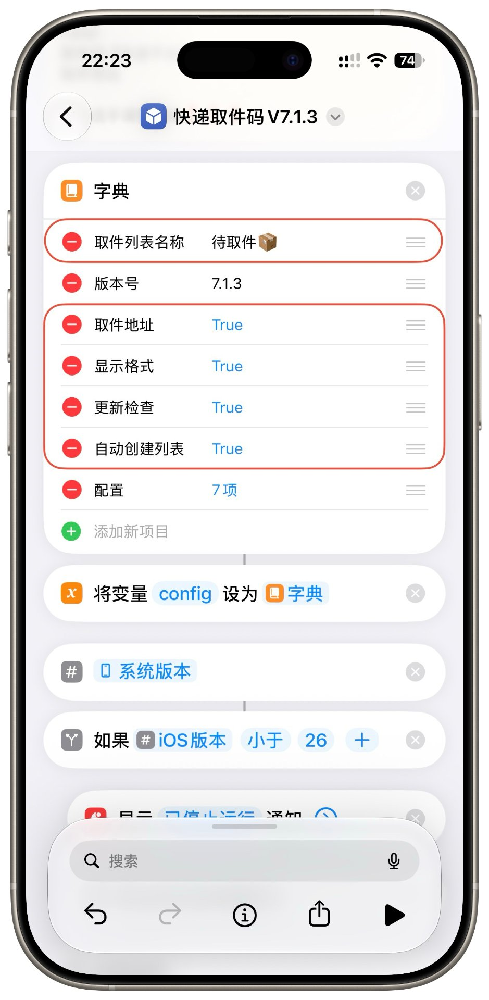
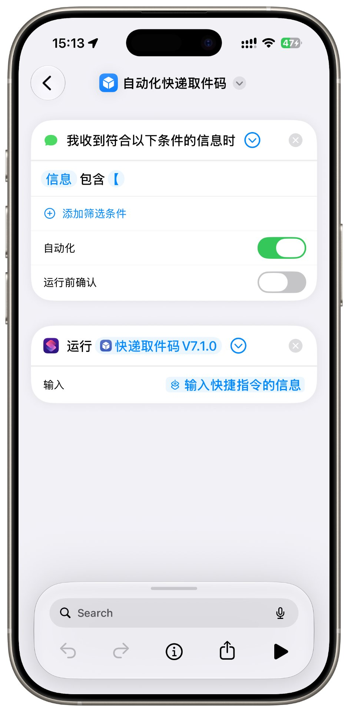
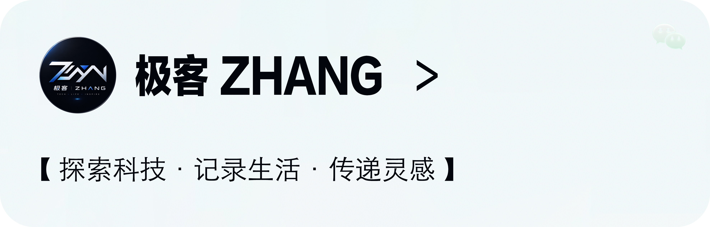

大家好，我是极客 ZHANG。我的「快递取件码」快捷指令又更新了——这次是 V7.1.0。它做的事一直很简单：手机收到快递短信，自动把取件码、运单号、取件地址提取出来，写进「提醒事项」的“待取件📦”清单，你取件时打勾就行。全程本地运行，不依赖任何第三方 App。
一、🆕 这次更新了什么
1. 在线更新检查（最重磅）
以前你不知道什么时候出了新版本。V7.1.0 起，指令启动时会联网拉取我在 Gitee 仓库维护的 version.json，比对版本号——有新版本就自动弹窗告诉你更新了什么、去哪下载。你不用再专门来翻公众号。

▲ 字典里的「更新检查」开关（红圈处），True 即开启在线更新
💡 如果你不想联网、或暂时不想检查更新：打开指令，找到最上方的第一个「字典」，把 更新检查 由
True 改成 False，就完全离线运行了。关闭后不会收到新版本提示，建议有网时定期打开检查一次。
2. 正则字典迁移（技术优化，对你透明）
五套正则（快递平台 / 取件码 / 运单号 / 取件地址）从原先的位置搬到了统一的「配置」子字典。正则内容一行没改，只是挪到了更合理的地方，为以后集中维护打底。顺带，动作数从 93 增长到 115，新增的 22 个动作主要就是在线更新模块。
二、✨ 它到底能帮你什么
- 📦 自动提取：取件码、运单号、快递公司、取件地址 / 驿站名
- 🔢 多码匹配：一条短信多个取件码（如
Z-0102,F1-1818）也能一次抓全 - 🚚 覆盖 30+ 家：顺丰、圆通、申通、中通、韵达、京东、极兔、菜鸟……含 SF、STO、ZTO、EMS、J&T 等英文标识
- ✅ 智能去重 + 自动打勾：同一条短信重复来，不会生成重复记录
- 🔔 取件通知：写入后推送系统通知，不怕漏看
- 🔒 本地离线：数据只在你自己的设备上，作者不收集、不上传
三、📲 怎么用（核心：短信自动触发）
它靠 iOS 自动化工作：手机收到包含【的快递短信 → 自动运行指令 → 提取信息 → 写入提醒事项。你日常几乎零操作。

▲ iOS 27 短信自动化配置实拍（其他版本界面类似）
照着截图 7 步设置即可：
- 自动化触发器选「信息 包含
【」 - 动作选「运行 快递取件码」
- 输入变量用「输入快捷指令的信息」
- 关闭「运行前确认」，打开自动化开关（配置完默认是关的，记得手动开）
四、📥 怎么获取
当前 V7.1.0：
▲ 扫码直接添加（iPhone 相机扫即可）
或复制 iCloud 链接在 Safari 打开：
https://www.icloud.com/shortcuts/527837f174134f6680cc528f85f98bc6
历史版本（V7.0.0 及更早）：
在微信搜索并关注公众号「极客 ZHANG」，在对话框回复 0525，公众号会自动下发对应版本的获取链接。
五、📣 关于这个项目
这是我从零独立设计、编写并持续维护的原创工具，遵循 Apple 快捷指令与开源社区规范，以 MIT 协议开源。没有任何收费行为——不含付费功能、不打赏、不诱导消费，纯粹「为爱发电」。取件数据只在你本地，我不会收集、也不会上传任何个人信息。
六、🤝 找不到快递？或想提建议？
某家快递识别不了：把原始短信发我公众号或小红书私信，我来适配，你不用自己改指令。

▲ 左：微信公众号「极客 ZHANG」 右：小红书「极客 ZHANG」